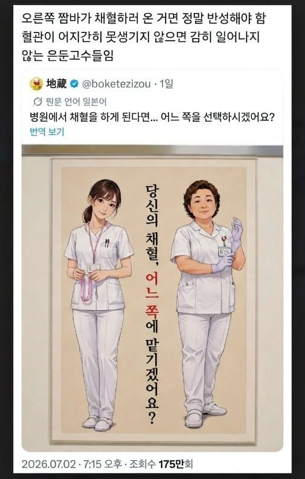

누구에게 맡기실 건가요
댓글
간호사 잘못 만나서 팔 한 쪽 귀검사 된 적 있음 ㅋㅋ
귀검사 표현 ㅈㄴ 웃긴데 이해가 쏙쏙 되잖아 ㅋㅋㅋㅋ
간호사가 피 안나온다고 몸에 바늘 꽂힌채로 바늘을 막 흔들더라
엥 혈관씹창나는데
주사 잘못맞으면 걍 존1나 아픔
내 팔뚝은 혈관 ㅈㄴ 잘보여서 왼쪽으로 갈랭
저런 포스터가 대체 왜 필요하지?
안이쁘다고 지랄한 새끼가 있었나?
아니면 생각없는 새끼가 만든 ai 그림인가?
난 오른쪽 와야함...
그런데 왼쪽이 참관하러 옴
나...나 어디 째져서 꿰메러 갔는데 초짜 간호사가 자기 선배에게 " 저 xx수처는 처음이에요" 하던데
왼쪽 존나아픔ㅋㅋㅋㅋㅋㅋㅋㅋㅋ
닥 오른쪽
딸 독감때 소아과가서 수액치료 받는데 간호사들 3번 다 실패하고 원장 부르더라... 원장선생님이 성공하심..
오바 오지게들 하는데 닥전
당연히 왼쪽이지. 죄송해하는 모습을 보는 것까지가 포상이거늘!
입원 오래했을때, 금식중 영양수액 점성으로 혈관이 부어서 양팔에 8방 쏘고 gg친다음
picc 카테터 밖았음.
무조건 오른쪽